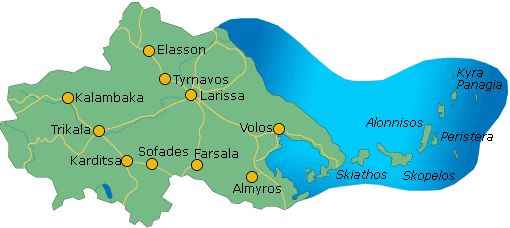

Παράδειγμα html σελίδας με χρήση style στο head
καθώς και χρήση λιστας
Πληροφορίες για την Ελλάδα
Γεωγραφικά διαμερίσματα της Ελλάδας
- Ήπειρος

- Θεσσαλία 
Διοικητικές περιφέρειες της Ελλάδας με κατάταξη ως προς τον πληθυσμό
τους
- Αττική
- Κεντρική Μακεδονία
- Θεσσαλία
- Δυτική Ελλάδα
- Κρήτη
- Ανατολική Μακεδονία και Θράκη
- Πελοπόννησος
- Στερεά Ελλάδα
- Ήπειρος
- Νότιο Αιγαίο
- Δυτική Μακεδονία
- Ιόνιοι Νήσοι
- Βόρειο Αιγαίο